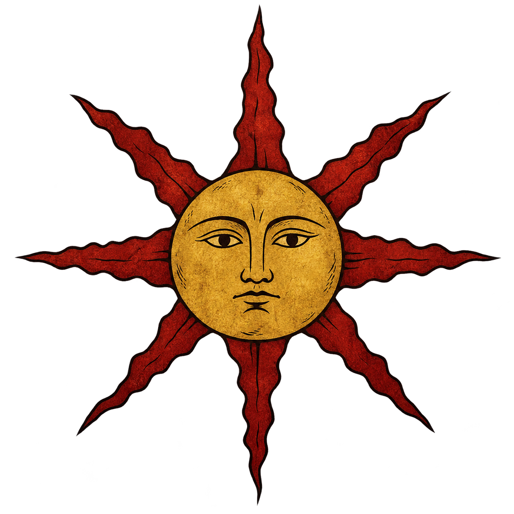
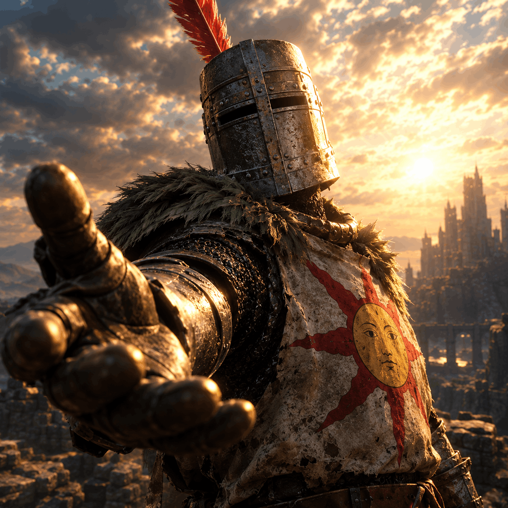

Solaire of Astora
The legendary knight
and a beacon of HOPE in a dying world!
Solaire of Astora
A warrior of the sun, a friend to alland a beacon of HOPE in a dying world!
About Solaire
Solaire of Astora is a wandering knight from the distant land of Astora, journeying through the
fading world of Lordran in search of his very own sun.
Clad in weathered armor and bearing the radiant symbol of his faith, he walks willingly into a
world consumed by darkness, greeting its dangers not with despair, but with an unwavering sense
of wonder.

Quote here
- Solaire of Astora